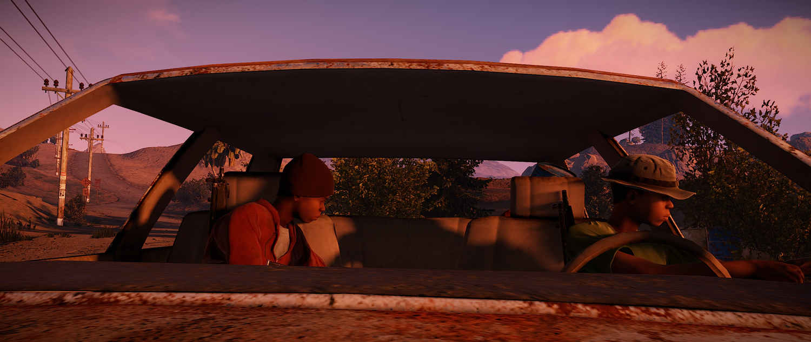

Łodzie, nowe monumenty i nowa mapa!
Łodzie nadchodzą!
FacePunch w zaskakującym tempie wywiązuje się ze swoich obietnic jak nigdy dotąd. Zaprezentowano nam łodzie które mają służyć szybszemu i cichszemu poruszaniu się po wyspie, taki szybki abordaż nie wiadomo skąd i kiedy. Co wiemy na temat łodzi, prócz tego że były dawno zapowiadane. Łódź wizualnie poza silnikiem jest ukończona, posiada efekt wpływu na wodę i co ważniejsza posiada funkcję której jeszcze nie posiada Sedan… Mianowicie da się ją zniszczyć a raczej zatopić… Poruszać się nią może tak samo jak sedanem 4 osoby, nie wiemy jednak czy silnik fizyczny tankowania jej jest ukończony. Naszym zdaniem tak ponieważ łatwo go zaimplementować z istniejącej już piły tak samo jak zaimplementowano efekt wpływu na wodę z Sedana do tej że łodzi. Niestety jednak raczej nie zobaczymy jej jeszcze fizycznie podczas tego update z wielu innych powodów. Helk jednak zapowiedział że łodzie spawnować się będą przy wipe losowo w liczbie 15-20 na mapę na plażach i latarniach morskich. Kto pierwszy ją zatankuje prowizorycznym paliwem ten będzie mógł ją sobie zabrać… Przypominamy jednak że do spełnienia obietnic z tego rozdziału FacePunch`owie zostało nie wiele, albowiem zrobienie grot-jaskiń wodnych właśnie dla łodzi między innymi, ukończyć sedana, zaimplementować to jakoś ładnie do gry by nie było to zbyt łatwe i nie odbiegało od realiów rozgrywki. Jak też zrobienie patroli jednostek naziemnych w roli głównej z Bradleyem po wszystkich drogach na mapie które już występują na mapach typu Hapis Island, ukończenie uzbrojenia Bradley`a i jego deploy żołnierzy i dosiadanie koni, ukończenie Eventu w roli głównej z Chinookiem-47, ukończenie łamigłówek na wybranych monumentach. Jest jeszcze parę mniejszych wątków do ukończenia ale to już błahostki… Kolejny rozdział zapowiedzianych zmian na drugie półrocze jest jeszcze ogromniejszy… Co sprawia że Rust to ta jedyna wyjątkowa gra która nie przestaje zaskakiwać….
Nowa papierowa mapa
Zmieniono raz jeszcze wygląd wizualny naszego podglądu mapy, od teraz jest ona bardziej wyrazista. Widać na niej góry rzeki, klify, plaże, biomy zimowe, pustynne i trawiaste oraz jaskinie w bardziej wyrazisty sposób. Dodatkowo pojawia się nowa opcja szybkiego switcha z powrotem na naszą pozycję na mapie.
Naukowcy zasiedli za sterami Chinook`a 47
Dopiero teraz Naukowcy zostali obsadzeni w roli załogi Chinook`a i mogą go śmiało pilotować. Czyż by to oznaczało że śmigłowiec i nowy Event został ukończony i pojawi się podczas tego Update?
Update nadchodzi! Wraz z nim nowe bronie!
Spas-12 Shotgun
Face Punch zaskakuje po raz kolejny! Tym razem z nowym typem broni którym jest słynny Spas-12, znany wielu graczom z serii GTA, Half Life czy też CS. Jest to 6 szybko strzałowy shotgun. Czym się różni od obecnego pomp shotgun`a zapytacie zapewne. Otóż kilkoma aspektami, zadaje mniejsze obrażenia kosztem szybkostrzelności, jest bardziej zdatny na bliskie dystanse oraz można ładować go nowym typem amunicji którym jest śrut zapalający. Czyż by to było najlepsze połączenie z Heavy zbroją do obrony i rajdowania online od dziś? Broni tej jak LR-300, M-24, M9 nie będzie się dało kraftować. Zdobyć ją można tylko i wyłacznie w obecnej chwili z Bradley`a i Helki. W przyszłości może się pojawić w zrzutach.
Śrut zapalający kalibru/typu 12
Nie jest podstawowym BP, co oznacza że nauczyć się go możemy za 75 skrapów i zbadać go już w ruletce na WorkBench`u Tieru 2 za 250 skrapów.. Kosztuje 5 Metal Fragmentów, 10 Prochu, 20 Siarki za 2 pociski, czas kraftingu to 3 sekundy. Nie wiemy jednak jakie obrażenia zadają nowe pociski, lecz wiemy że są pociskami zapalającymi zadającymi dodatkowe obrażenia od ognia. Czy oznacza to że są przydatne do niszczenia drewnianych drzwi, ścian, trapów i turetów?
Piła łańcuchowa
Z tego co się dowiedzieliśmy i opisywaliśmy w poprzednich wpisach, piły łańcuchowe zostały już dodane. Piła działa na podobnej zasadzie jak miotacz ognia, ładujemy ją 50 jednostkami paliwa niskiej jakości. Odpala się ją za pomocą prawego przycisku myszy, żeby nie było zbyt łatwo może to trochę potrwać… Coś w formie eoki, raz zaskoczy szybciej a raz wcale. Wiadomo piła służy w głównej mierze do ścinania drzewa, koszt takiego zabiegu na jednym drzewie to 7 jednostek paliwa. Lecz w mojej ocenie jest to opłacalne, ponieważ drzewo schodzi w mgnieniu oka niczym w tartaku na taśmociągu… Wiadomą sprawą jest też że piła służyć będzie do szybszego rajdowania drewnianych drzwi, ścian, autorek i nie tylko. Piła zadaje mniejsze obrażenia w stosunku do Salvaged Axe ale za to niemal 11 razy szybciej od niego. Więc można to porównać do takiego mini speed hacka. Koszt stworzenia piły to 5 sztuk metalu wysokiej jakości, 6 metalowych ostrzy, 2 koła zębate, czas kraftingu to 30s. Zdobyć BP możemy na workbenchu tieru 2 za 250 skrapów.

Obsada pojazdów ukończona!
Nowe zmiany w pojazdach
Nowy tydzień, nowe informacje na temat zmian w systemie pojazdów! Jak już wiemy Sedan jak i Chinook-47 zostały zaktualizowane o możliwość obsadzania ich w graczy jak też NPC. Sedanem od tej chwili jeździć może 4 graczy, natomiast Chinook`iem może latać aż 14 osób! Czyż to nie wspaniałe? Wyobraźcie sobie jak to wyglądać będzie gdy taki transport będzie lądował a z niego wysiadać będzie około 14 npc, którzy wcześniej przelatując nad okolicą zrobią niezłe piekło wszystkim na zewnątrz. Poniżej udostępniamy Państwu nagranie znalezione na YouTube pokazujące ogrom zmian i możliwości.
Naukowcy Oficjalnie dodani!
Niebieskie Hazmaty zostały oficjalnie dodane do gry! Od tej pory ujrzeć je będziemy mogli nie tylko w tunelach militarnych ale i też na innych monumentach i nie tylko! Docelowo mają się też pokazywać na drogach. Dokładne miejsca ich rozłożenia nie są ujawnione, wiemy też że jeszcze formalnie nie są one jeszcze ukończone. Więc tak na prawdę sami developerzy do dnia jutrzejszego nie wiedzą dokładnie gdzie oni się pojawią w tym update. W końcu skończy się pełne kampienie na monumentach i bezkarne bieganie po mapie… Niestety dalej nie ma żadnych wzmianek odnośnie zmiany systemu lootu z nich.
Chinook-47
Wiemy już jak będzie działał Chinook-47! Czyż nie brzmi to podobnie do Hitman 47? Wracając do tematu, nowy Helikopter będzie miał za zadanie dostarczenie specjalnego ładunku do jednego z wybranych monumentów. Zadaniem graczy będzie zaś odbicie ładunku i obrana terenu przez dany czas by uzyskać dostęp do zawartości skrzyni. Nie dość że będziemy walczyć z NPC którzy będą towarzyszyć ładunkowi i owemu Helikopterowi to jeszcze będziemy się wzmagać z radiacją i innymi graczami. Czyż nie jest to ekscytujące? Poniżej przedstawiamy wam nowy typ zrzutu… Wygląda na to że w środku znajdować się będą aż 3 militarne skrzynie!